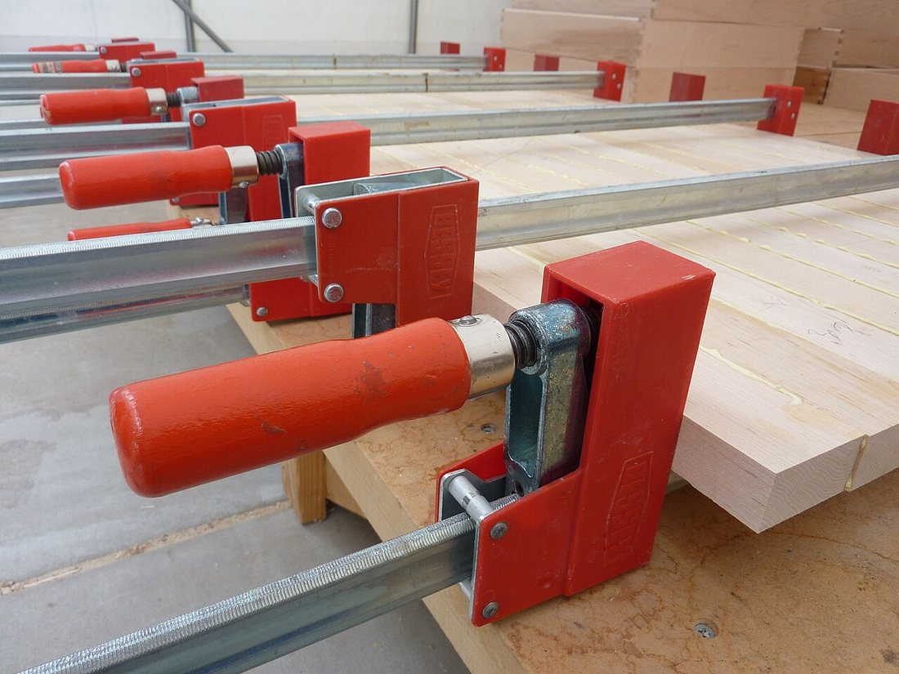
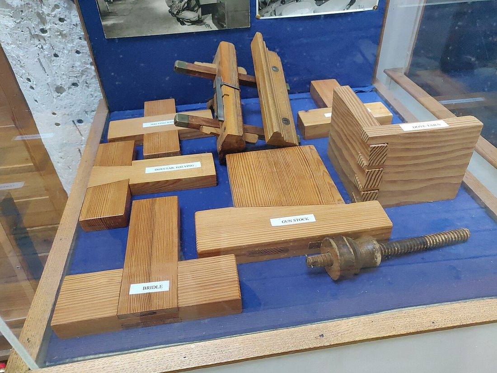
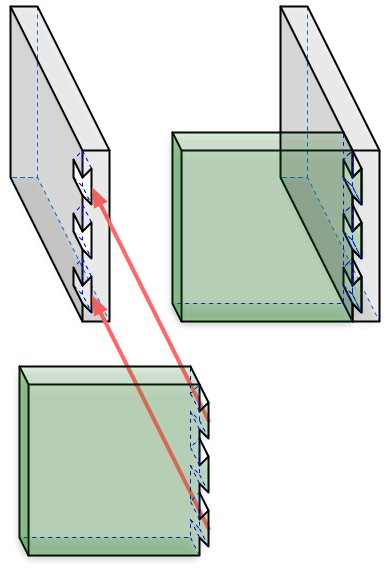
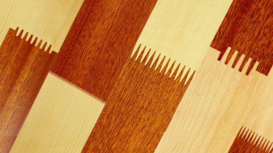
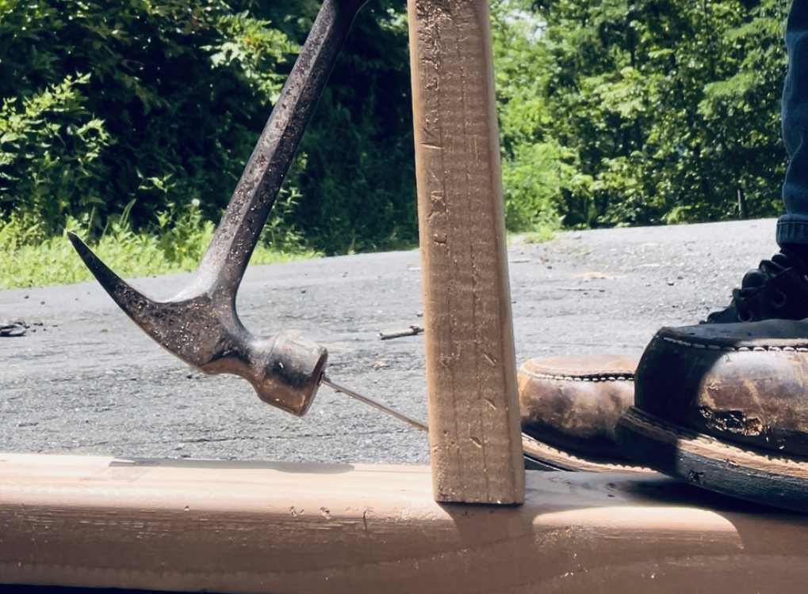

Көркем еңбек (ұлдар) · 2-бөлім · Ағаш өңдеу Art & Craft (Boys) · Section 2 · Woodworking Художественный труд (мальчики) · Раздел 2 · Обработка древесины
🪵 Ағаш бөлшектерін біріктіру
🪵 Joining Wooden Parts
🪵 Соединение деталей из дерева
Бөлек бөлшектерден берік бұйым: желімдеу, шеге, бұранда және ағаш ұластырмалары. From separate parts to a sturdy item: glue, nails, screws and woodworking joints. Из отдельных деталей — прочное изделие: клей, гвозди, шурупы и столярные соединения.
Кез келген ағаш бұйым — табуретка, сөре, жәшік немесе ойыншық — көбіне бір емес, бірнеше бөлшектен құралады. Оларды бір-бірімен дұрыс біріктіру (соединение) — ағаш ұстасының басты шеберлігі. Қосылыс берік, тегіс әрі ұқыпты болуы керек: дұрыс жасалған жалғау бұйымды ұзақ қызмет еткізеді, ал нашар жалғау бұйымды сынғыш етеді. Барлық қосылыстарды екі үлкен топқа бөлуге болады: ажыратылатын (бұзбай шешуге болатын — бұранда, болт) және ажыратылмайтын (тек бұзып ажырататын — желім, шеге, ағаш ұластырмалары). Бұл плакатта осы тәсілдерді және оларды қалай таңдау керектігін қарастырамыз. Almost any wooden item — a stool, a shelf, a box or a toy — is usually made not from one piece but from several parts. Putting them together correctly — making a good joint — is the carpenter's main skill. A joint must be strong, flush and tidy: a well-made joint lets the item serve for years, while a poor one makes it fragile. All joints fall into two big groups: detachable (can be taken apart without damage — screws, bolts) and permanent (can only be separated by breaking — glue, nails, woodworking joints). This poster looks at these methods and at how to choose between them. Почти любое деревянное изделие — табурет, полка, ящик или игрушка — обычно состоит не из одной, а из нескольких деталей. Правильно соединить их между собой — главное мастерство столяра. Соединение должно быть прочным, ровным и аккуратным: хорошо сделанное соединение позволяет изделию служить годами, а плохое делает его хрупким. Все соединения делят на две большие группы: разъёмные (можно разобрать без повреждений — шурупы, болты) и неразъёмные (разделить можно только сломав — клей, гвозди, столярные соединения). На этом плакате мы разберём эти способы и то, как выбрать между ними.
Бұйымды бұзбай шешіп, қайта жинауға болады. Мысалы: бұранда (шуруп), болт пен гайка. Жөндеуге, тасымалдауға ыңғайлы — жиналмалы жиһаз осылай жасалады. The item can be taken apart and reassembled without damage. For example: screws, bolts and nuts. Handy for repair and transport — flat-pack furniture is built this way. Изделие можно разобрать и собрать заново без повреждений. Например: шурупы, болты с гайками. Удобно для ремонта и перевозки — так делают сборную мебель.
Бөлшектер мықтап, біржола қосылады; ажырату үшін бұйымды бұзу керек. Мысалы: желімдеу, шеге, тісті ұластырмалар. Ең берік, көрікті қосылыстар осы топта. The parts are joined firmly and for good; to separate them you must break the item. For example: gluing, nails, interlocking joints. The strongest, most elegant joints belong to this group. Детали соединяются прочно и навсегда; чтобы разделить, изделие придётся сломать. Например: склеивание, гвозди, врезные соединения. Самые прочные и красивые соединения — в этой группе.
Біріктіру тәсілдерін салыстыру Comparing the Joining Methods Сравнение способов соединения
Әр тәсілдің күшті жағы мен қолданылуы. The strengths and uses of each method. Сильные стороны и применение каждого способа.
| Способ | Тип | Прочность | Где применяют |
|---|---|---|---|
| Гвоздь | неразъёмный | средняя, быстрый | опалубка, ящики, черновые работы |
| Шуруп / саморез | разъёмный | высокая, держит крепко | мебель, петли, ремонт |
| Болт с гайкой | разъёмный | очень высокая | нагруженные узлы, сборная мебель |
| Клей (склеивание) | неразъёмный | высокая по всей площади | щиты, фанера, ламели |
| Нагель / шкант | неразъёмный | высокая, скрытое | мебель без видимого крепежа |
| Шип и проушина | неразъёмный | очень высокая | рамы, двери, столы |
| Тәсіл | Түрі | Беріктігі | Қолданылуы |
|---|---|---|---|
| Шеге | ажыратылмайтын | орташа, жылдам | қалып, жәшік, дөрекі жұмыс |
| Бұранда / саморез | ажыратылатын | жоғары, мықты ұстайды | жиһаз, топса, жөндеу |
| Болт пен гайка | ажыратылатын | өте жоғары | жүк түсетін түйін, жиналмалы жиһаз |
| Желім (желімдеу) | ажыратылмайтын | барлық бетте жоғары | қалқан, фанера, ламель |
| Ағаш шеге (нагель/шкант) | ажыратылмайтын | жоғары, жасырын | көрінбейтін бекіткішсіз жиһаз |
| Тіс пен ұя | ажыратылмайтын | өте жоғары | жақтау, есік, үстел |
| Method | Type | Strength | Where it is used |
|---|---|---|---|
| Nail | permanent | medium, fast | formwork, crates, rough work |
| Screw | detachable | high, holds firmly | furniture, hinges, repair |
| Bolt & nut | detachable | very high | loaded joints, flat-pack furniture |
| Glue (gluing) | permanent | high over the whole area | panels, plywood, laminations |
| Dowel | permanent | high, hidden | furniture with no visible fasteners |
| Mortise & tenon | permanent | very high | frames, doors, tables |
Негізгі ұстагерлік ұластырмалар Main Woodworking Joints Основные столярные соединения
┳ Тіс пен ұяMortise & tenonШип и проушина
Бір бөлшектегі «тіс» екіншісіндегі «ұяға» кіреді. Жақтау мен есіктің ең берік қосылысы.A "tenon" on one part fits a "mortise" in the other. The strongest joint for frames and doors.«Шип» одной детали входит в «проушину» другой. Самое прочное соединение рам и дверей.
⋈ Қарлығаш құйрықDovetail«Ласточкин хвост»
Сыналы тістер бір-біріне ілінеді. Тартқанда ажырамайды — жәшік бұрыштарына таптырмас.Wedge-shaped pins interlock. They cannot be pulled apart — ideal for drawer corners.Клиновидные шипы цепляются друг за друга. Не вытягиваются — идеален для углов ящиков.
▥ Тісті (саусақ) жалғауFinger jointШиповое (на «гребёнку»)
Тарақ тәрізді тістер бір-біріне кіреді. Желіммен — желімдеу беті үлкен, өте берік.Comb-like fingers slot together. With glue the bonding area is large and very strong.Гребёнчатые шипы входят друг в друга. С клеем — большая площадь и высокая прочность.
▤ Жартылай қию (вполдерева)Half-lapВполдерева
Екі бөлшектен жартылай ағаш аршылып, тегіс беттер бетпе-бет қосылады.Half the thickness is cut from each part so the flat faces sit flush together.У обеих деталей срезают половину толщины, ровные грани ложатся заподлицо.
Желімдеп біріктіру: 6 қадам Joining by Gluing: 6 Steps Соединение склеиванием: 6 шагов
Екі тақтайды берік желімді қосылысқа айналдыру. Turning two boards into a strong glued joint. Как превратить две доски в прочное клеевое соединение.
Беттерді дайындауPrepare the surfacesПодготовка поверхностей
Қосылатын беттерді тегіс әрі таза етеміз: рандалап, шаң мен майды кетіреміз. Желім тек тегіс, бір-біріне дәл жанасатын беттерде ғана берік ұстайды.We make the mating faces flat and clean: plane them, remove dust and grease. Glue only holds well on flat surfaces that touch each other exactly.Делаем склеиваемые грани ровными и чистыми: строгаем, убираем пыль и жир. Клей держит прочно только на ровных, плотно прилегающих поверхностях.
Құрғақтай тексеруDry-fit firstПримерка «насухо»
Желімсіз бөлшектерді жинап көреміз: саңылау жоқ па, бұрыштар тура ма? Алдымен тексер, сосын желімде — қателікті уақытында табамыз.We assemble the parts without glue: any gaps, are the corners square? Check first, glue second — so mistakes are caught in time.Собираем детали без клея: нет ли щелей, прямые ли углы? Сначала примерь, потом клей — так ошибку находят вовремя.
Желімді жағуApply the glueНанесение клея
Желімді (мысалы, ПВА) екі бетке де жұқа әрі біркелкі жағамыз. Артық желім қажет емес: ол сыртқа ағып, бұйымды былғайды.We spread the glue (e.g. PVA) thinly and evenly on both faces. No need for excess: it squeezes out and messes up the item.Наносим клей (например, ПВА) тонко и равномерно на обе грани. Лишний клей не нужен: он выдавливается и пачкает изделие.
Қысып бекітуClamp under pressureСжатие под прессом
Бөлшектерді қысқыштармен (струбцина) қысамыз. Қысым желімді жұқа қабатқа жайып, беттерді тығыз қосады — қосылыс сонда ғана берік болады.We squeeze the parts with clamps. The pressure spreads the glue into a thin layer and presses the faces tight — only then is the joint strong.Сжимаем детали струбцинами. Давление распределяет клей тонким слоем и плотно прижимает грани — только так соединение получается прочным.

тақтайлар қысқышпен қысылғанboards pressed in clampsдоски сжаты струбцинами
Кептіру (ұстау)Let it cureВыдержка (сушка)
Бұйымды қыспаған күйі желім кепкенше қалдырамыз (көбіне бірнеше сағат). Бұл уақытта оны қозғамаймыз — әйтпесе қосылыс әлсіреп қалады.We leave the item clamped until the glue has cured (often several hours). During this time we do not move it — otherwise the joint becomes weak.Оставляем изделие в зажиме, пока клей не схватится (часто несколько часов). В это время его не трогаем — иначе соединение ослабнет.
Тазалау мен өңдеуClean up and finishЗачистка и отделка
Қысқышты алып, артық кепкен желімді қырамыз, қосылысты еспе қағазбен тегістейміз. Енді бұйымды бояуға не лактауға болады.We remove the clamps, scrape off any dried squeeze-out and smooth the joint with sandpaper. Now the item can be painted or varnished.Снимаем зажим, счищаем лишний застывший клей и выравниваем шов наждачной бумагой. Теперь изделие можно красить или лакировать.
Қосылыстар галереясы Gallery of Joints Галерея соединений
🔍 Толық көру үшін суретті басыңыз. 🔍 Tap a photo to view it in full. 🔍 Нажмите на фото, чтобы рассмотреть.

Бір витринада әртүрлі ұстагерлік қосылыстар: тіс-ұя, қарлығаш құйрық, жартылай қию.Different woodworking joints in one display: mortise-and-tenon, dovetail, half-lap.Разные столярные соединения в одной витрине: шип-проушина, «ласточкин хвост», вполдерева.

Тістер қалай ілінетінін көрсететін сызба: тартқанда қосылыс ашылмайды.A diagram of how the pins interlock: the joint does not pull open.Схема, как сцепляются шипы: при растяжении соединение не раскрывается.

Екі түсті ағаштың тарақ тістері бір-біріне кіріп, желіммен берік ұсталады.Comb-like fingers of two wood tones slot together and are held firmly with glue.Гребёнчатые шипы из дерева двух оттенков входят друг в друга и держатся на клее.
Тақтайлар қысқыштармен қысылып, кең қалқанға желімделеді — берік әрі тегіс.Boards are clamped and glued into a wide panel — strong and flat.Доски сжимают струбцинами и склеивают в широкий щит — прочно и ровно.

Шеге — ең жылдам тәсіл: балғамен қағамыз. Дөрекі әрі уақытша жұмысқа ыңғайлы.A nail is the fastest method: driven in with a hammer. Handy for rough or temporary work.Гвоздь — самый быстрый способ: забивают молотком. Удобен для черновых и временных работ.
Шебер қолда ағаштың өзі бекіткіш болады: шеге де, бұранда да керек емес.In skilled hands the wood itself is the fastener: no nails or screws needed.В умелых руках само дерево становится крепежом: ни гвоздей, ни шурупов не нужно.
Ережелер мен қауіпсіздік Rules & Safety Правила и безопасность
📏 Алдымен өлшеMeasure firstСначала разметка
Тесік пен тісті дәл белгіле: «жеті рет өлше, бір рет кес».Mark holes and tenons precisely: "measure seven times, cut once".Точно размечай отверстия и шипы: «семь раз отмерь, один отрежь».
🕳️ Тесік бұрғылаPre-drillСверли отверстие
Бұранда салар алдында жіңішке тесік бұрғыла — ағаш жарылмайды.Drill a thin pilot hole before a screw — the wood won't split.Перед шурупом сверли тонкое отверстие — дерево не треснет.
🔨 Саусақты сақтаProtect fingersБереги пальцы
Шегені тістеуікпен ұстап қақ, балғаны мықтап ұста.Hold the nail with pliers when starting it, grip the hammer firmly.Придерживай гвоздь плоскогубцами, крепко держи молоток.
🧴 Желімді үнемдеDon't over-glueНе лей клей
Жұқа қабат жеткілікті; артық желім сыртқа ағып, дақ қалдырады.A thin layer is enough; excess glue runs out and leaves marks.Достаточно тонкого слоя; лишний клей вытекает и оставляет пятна.
📐 Бұрышты тексерCheck the angleПроверяй угол
Қысар алдында бұрыштықпен (угольник) 90° екенін тексер.Before clamping, check it is 90° with a try-square.Перед сжатием проверь угольником, что угол 90°.
🧹 Орынды жинаTidy upУбирай место
Шеге мен ұнтақты жинап, құралды орнына қой; жұмыстан соң сана.Collect nails and dust, put tools back; count them after work.Собери гвозди и опилки, верни инструмент; после работы пересчитай.
⚡ Жылдам керек пе?Need it fast?Нужно быстро?
Шеге таңда: тез әрі қарапайым. Бірақ беріктігі орташа — дөрекі жұмысқа лайық. Choose nails: quick and simple. But strength is only medium — good for rough work. Выбирай гвозди: быстро и просто. Но прочность средняя — для черновых работ.
🔧 Шешу керек пе?Need to dismantle?Нужно разбирать?
Бұранда не болт таңда: бұйымды бұзбай шешіп, қайта жинай аласың. Choose screws or bolts: you can take the item apart and rebuild it without damage. Выбирай шурупы или болты: изделие можно разобрать и собрать без повреждений.
💪 Мықты әрі көрікті?Strong and elegant?Прочно и красиво?
Желім мен ағаш ұластырмаларын таңда: бекіткіш көрінбейді, қосылыс өте берік. Choose glue and woodworking joints: no fastener shows and the joint is very strong. Выбирай клей и столярные соединения: крепёж не виден, а соединение очень прочное.
💬 Қорытынды 💬 In a nutshell 💬 Главное
Ағаш бөлшектерін біріктірудің бір ғана дұрыс жолы жоқ — әр тапсырмаға өз тәсілі бар. Тез әрі дөрекі жұмысқа — шеге, шешілетін бұйымға — бұранда мен болт, ал ең берік әрі көрікті бұйымға — желім және ұстагерлік ұластырмалар. Қай тәсілді таңдасаң да, басты ереже біреу: беттерді мұқият дайында, дәл өлше, қысып бекіт және ұқыптылықты ұмытпа. Сонда бөлек бөлшектер бір бүтін, берік бұйымға айналады. There is no single right way to join wooden parts — each task has its own method. For fast, rough work use nails; for an item you may dismantle, screws and bolts; for the strongest, finest work, glue and woodworking joints. Whatever you choose, one rule stays: prepare the surfaces carefully, measure precisely, clamp under pressure and stay neat. Then separate parts become one whole, sturdy item. Нет единственно верного способа соединить детали из дерева — у каждой задачи свой способ. Для быстрой, черновой работы — гвозди; для изделия, которое можно разбирать, — шурупы и болты; для самого прочного и красивого — клей и столярные соединения. Что бы ты ни выбрал, правило одно: тщательно готовь поверхности, точно размечай, сжимай под прессом и не забывай об аккуратности. Тогда отдельные детали станут единым, прочным изделием.